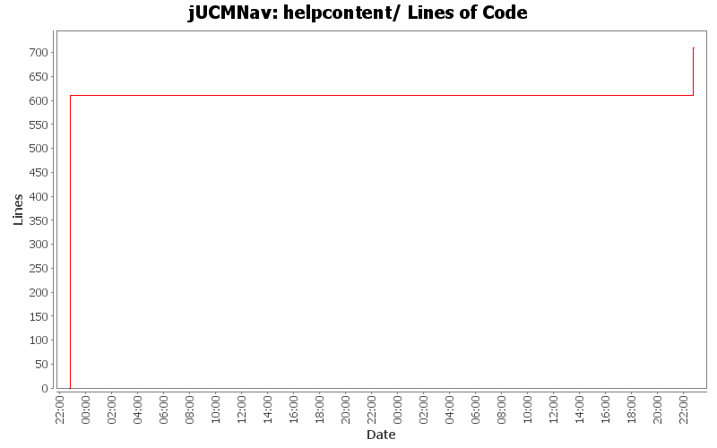

Summary Period: 2005-07-16 to 2005-07-18
[root]/helpcontent

Total Lines Of Code:
710 (2006-03-31 18:01)
| Author | Changes | Lines of Code | Lines per Change |
|---|---|---|---|
| jpdaigle | 10 (100.0%) | 710 (100.0%) | 71.0 |
+ Addition of eclipse.org's book.css for nicer and more consistent formatting of documentation. (pulled from twiki)
+ Fixed up the update script to remove "<BASE>" tags from the downloaded HTML documentation.
+ Tweaked deployment instructions to reflect new jar-based deployment, in conformance with new E3.1 plugin packaging standards.
99 lines of code changed in:
+ Fix help bug when deployed with base href=""
+ Better build script: smaller artifact outputs, all-in-one jarfile for deployment.
0 lines of code changed in:
+ Addition of referenced images in helpcontents folder.
* Fixed update script to correctly convert links to relative form and download any images referenced by the page.
0 lines of code changed in:
+ Including a local version of the monolithic help file for offline browsing.
+ Script for fetching latest version from TWiki site.
+ Build script updates to include help content in deployment package.
+ help.xml updates to refer to local help.
(TODO: images still stored offsite - need to hack the script to change external refs; debug wget -p option)
611 lines of code changed in:
Generated by StatCVS 0.2.4